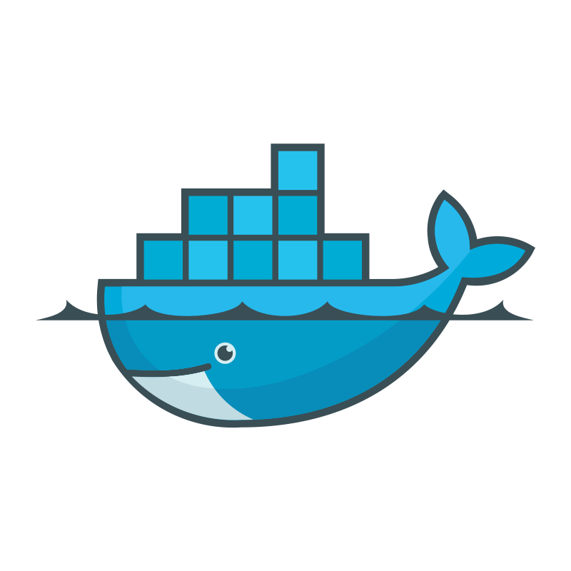
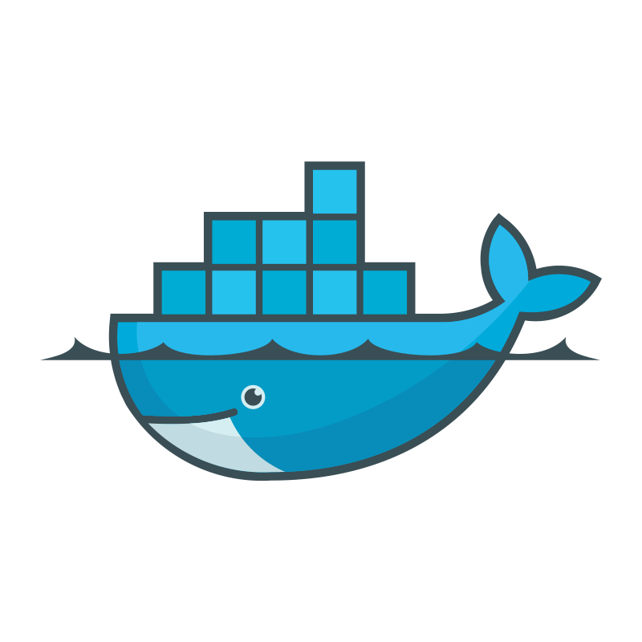

René Kuhn

Aspiring Terramate Intern with a passion for cloud technologies
My Professional Journey So Far
hubspot

 



Personal Startup Experience
django tailwind
Data Analysis and Reporting
Managed EC2 server and Metabase for real-time analytics.
Connected to AWS RDS PostgreSQL for efficient data storage and querying.
Data Tool Development
Developed a data ingestion tool using web scraping and REST APIs.
Integrated OpenAI API for data enrichment.
Cloud Infrastructure Management
Led migration from EC2 to ECS, focusing on scalability and efficiency.
Implemented Docker solutions.
Contributing to Terramate’s Success
Linux Package Management Integration
- Develop a Terramate repository for Linux package managers.
- Simplify installation, updates, and maintenance for Linux users.
- Enhance adoption, update ease, and user satisfaction.
Pizza as Code Support
- Help to organizse the Meetup
- Make sure that audio and video is working during the event
My Passion for Technology and Continuous Learning
Diverse Conference Attendance in my Freetime:
- AWS Summit Berlin
- Google Cloud Meetup Berlin
- DevOps Meetup Berlin
- Azure Meetup Berlin
- GopherCon Berlin
- KubeCon China
Teaching Linux and advocating for open source
- Founded an IT club, emphasizing Linux server infrastructure and hands-on learning.
- Conduct practical lessons for beginners on terminal usage.
- Teach server concepts at a semi-practical level, adapting to the current readiness of the audience.
- Focus on higher-level IT concepts such as containerization, TCP ports, DNS, and reverse proxying.
- Demonstrate practical applications by setting up SSH keys, installing Docker and Nginx, and configuring DNS records.
Staying up-to-date and Deepening Knowledge
- Read HackerNews minimum 4 hours/week for the latest tech trends and discussions
- Read Books like like ‘Projekt Phoenix’ for deeper understanding in IT and management.
Side Projects like:
A Bvg Bus Monitor that I made for a friend

use my communication skills to do user research
something like a series on dev.to
helop orgaasize podcast interviews for soeeren
awesome terraform
how cloud the homelab community leverage this
a kind of imagined case study of a tean building a landing zone with terramate , super short version of project phoenix geistige brandstiftung
Primary goals for the internship
Learning Terraform
Terraform Associate 003 Certification
Graduation Project
- Demonstrate Terramate skills by creating and documenting an example landing zone using best practices
- Record a great presentation video for YouTube
My Questions
What makes terramate cloud stand out against other tools ? Should there be documentation on how to use terramate for spacelift customers?
My Approach to Independent Work and Management
bla